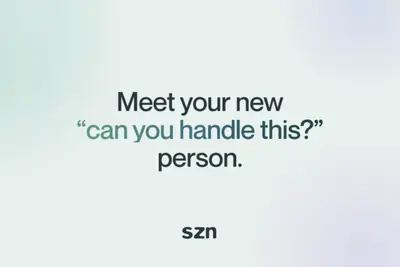
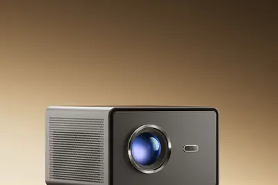
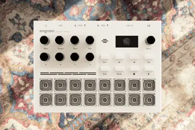
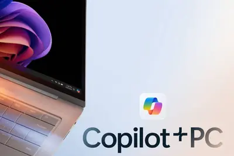

全部主題
Claude 和 ChatGPT 可以互相搬家嗎？本文整理記憶、對話紀錄與 Skills 的雙向轉移方法，以及不同方案、裝置與帳號的限制。
IT之家 9 月 28 日消息，前苹果 Siri 和 Apple Intelligence 工程师 Nikhil Gupta 宣布推出了一款名为 szn 的 AI 智能体，可直接运行在 iMessage 对话中，帮助用户浏览网页、购买商品以及代表用户与商家沟通。该服务目前已在官网开启注册，面向部分用户提供早期体验，计划于 10 月进一步扩大开放范围。 与传统聊天机器人不同，szn 并不只是回答用户的问题，而是可以代表用户执行实际操作。目前用户可以通过 iMessage 与 szn 互动，其能够基于用户共享的备忘录、Find My 位置以及 iCloud

IT之家 9 月 28 日消息，荣耀亲选 AI 投影仪 Ultra 今日 14:25 正式开售，原价 2599 元、国补到手价 1999 元。 京东 荣耀亲选 AI 投影仪 Ultra 2599 元 直达链接 这款新品拥有 1700CVIA 流明亮度，符合国家标准并获得权威认证，宣称即使白天不拉窗帘、夜晚开灯直投，也能拥有清晰画面。 它采用自研全封闭光机 2.0 技术 ，升级了防尘性与散热性，从源头提升耐用性，大幅降低光损，让画面更清晰。还配备光镜双玻隔热系统，无偏光片屏体，高密度超亮光源，5 片全域高解析镜头和动态轻音风扇，进一步提升画面亮度和清晰度，

AI 晶片功耗逼近甚至超越 1kW，傳統 PCB 走線帶來的寄生電阻與 IR 壓降已成為算力發揮的瓶頸。PMI […]
IT之家 9 月 28 日消息，据英国《金融时报》当地时间 26 日报道，非法获取 AI 模型和算力，正迅速成为网络犯罪黑市上最抢手的商品，黑客希望借助价格高昂的大模型实施勒索、网络战和间谍活动。 谷歌威胁情报团队首席分析师约翰 · 霍特奎斯特披露，今年所谓“LLM 劫持”活动明显增多，具体表现于 倒卖公开 AI 工具的被盗登录凭据 ，以及部分团体盗用他人算力，以免费运行自己的模型。 从事网络安全工作 20 年的霍特奎斯特坦言：“我们在地下市场看到，一个围绕 AI 使用权限形成的经济体系在不断壮大。” 霍特奎斯特警告，攻击者能够 以低廉价格使用原本昂贵的
Music startup Thoughtful Things has just launched the Kickstarter campaign for its first instrument, Engram. It's a sampler and groovebox that uses AI to mangle incoming audio and even hallucinate completely new sounds. This isn't Suno in a box, though. This isn't a "push-button,

This will be the first one-on-one meeting between Dario Amodei and Donald Trump
On Equity, we discussed how Meta's AI announcement managed to steal the spotlight from OpenAI and Anthropic.
Security researcher Rowan Howard-Jones says that OpenAI agents scanned the UN Conference on Trade and Development's (UNCTAD) statistics site over 16,000 times between April and June. While the incident doesn't quite rise to the level of the Hugging Face hack, or the recent attack
IT之家 9 月 27 日消息，9 月 25 日，字节跳动旗下豆包手机助手发布声明称，从 9 月 24 日晚上开始陆续收到多条用户反馈，在搭载了豆包手机助手的 努比亚 NaviX Ultra 上，登录《王者荣耀》或进行匹配对战时， 会出现提示设备环境异常、被强制踢下线的情况 。 豆包手机助手在声明中提到，经过确认全程未对腾讯游戏系统进行任何操作，AI 也不存在任何违规点击、外挂或模拟行为。目前团队仍在持续与腾讯相关方接洽沟通，但截至目前暂未收到对方的明确回复。 “对此我们深表歉意。同时，也建议用户暂时不要在努比亚 NaviX Ultra 上反复尝试登录《
IT之家 9 月 27 日消息，为防范人工智能彻底失控，Anthropic 的数位资深员工正在悄然制定具体的应急预案。 据华尔街日报于当地时间 9 月 26 日报道，最近数周内，Anthropic 的部分早期员工曾向业界同行透露， 他们正打算在美国偏远荒僻的地区购置土地建造隐匿点，以便在“AI 走向失控反噬”之际举家撤离避难 。 对这个圈子而言，“逃离 AI”的念头早已屡见不鲜。据早期离职员工回忆，早在 Anthropic 创立初期的公司聚餐中，大家就曾热烈推演过一种极具“曼哈顿计划式假想”的情景：他们未来可能随时被政府征调至荒芜的沙漠深处，在具备全套防
IT之家 9 月 27 日消息，博主 @SugarDesign 今日分享了一张上汽 MG 07 旅行车谍照，新车前脸延续 MG 07 的设计语言，而车尾则采用了旅行车的造型设计，车顶配有激光雷达。 IT之家注意到，上汽 MG 07 于 8 月 21 日正式发布，上市 20 天大定超过 4.2 万台，限时补贴价 10.59 万元起。该车尺寸为 4886×1900×1485mm、轴距 2825mm，拥有 168L KK 自动开合前备箱、697L 电动后备厢，以及 109L 下沉空间。支持全车通风加热按摩、配备整片式调光全景天幕，同时行业首创“女王多功能美妆台
微軟在 2024 年推出 Copilot Plus PC，試圖以 NPU 與一系列 AI 功能，替新一代 Wi […]

當人工智慧走出實驗室的完美環境，直接面對醫院裡真實的病患與病歷，會發生什麼事？近期，中國北京視覺科學與轉化醫學 […]
Google AI Pro 訂閱用戶每月可獲得 200 個 Colab 運算單元，足以驅動 A100 80GB HBM 等高階 GPU，搭配 2026 年 6 月上線的 Colab CLI，開發者和代理任務可以直接從終端機呼叫 GPU 算力。
研究人員在 ChatGPT 網頁原始碼中找到代號「Pro Max」的訂閱方案，月費 500 美元，主要提供 Work 和 Codex 兩項 Agent 工具的最高速度優先。OpenAI 尚未官方確認，外界預期最快在 9 月 29 日的 DevDay 正式發表。
過去幾年，生成式 AI 的投資熱潮席捲全球創投市場。自 ChatGPT 問世後，大量資本湧向 AI 軟體新創， […]